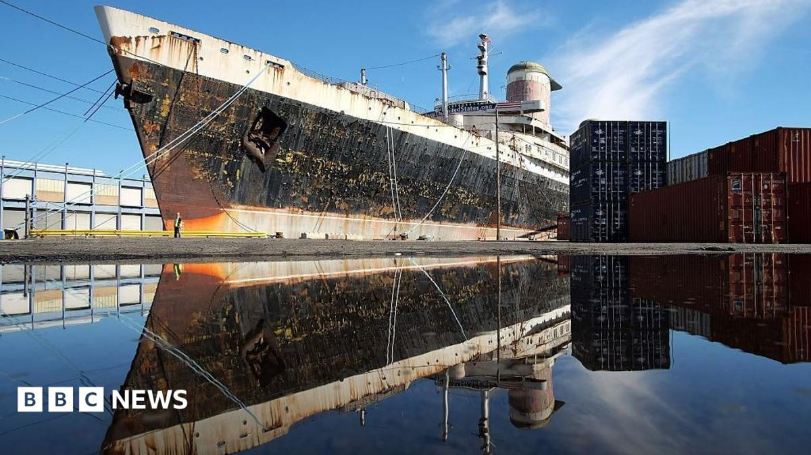

Science · 12 Nov 2026
Sunken treasure: Historic US ocean liner reborn as artificial reef

A majestic and all but indestructible 20th-century ocean liner that once ferried royal leaders, movie stars and even the "Mona Lisa" to the United States was being deliberately sunk Wednesday to become the world's largest artificial reef.
Multiple independent publishers are reporting on the same development: Sunken treasure: Historic US ocean liner reborn as artificial reef.
The available reports place the development in the Science category. The accounts were compared for agreement on the central event rather than simply shared names or broad topics.
One of the available reports describes the development this way: A majestic and all but indestructible 20th-century ocean liner that once ferried royal leaders, movie stars and even the "Mona Lisa" to the United States was being deliberately sunk Wednesday to become the world's largest artificial reef.
Readers should consult the linked source reports for additional context, updates and details that may change as the story develops.
Sources
This article was produced by the C. O. Eric AI Newsroom from the cited sources. It is published only after automated evidence and safety checks.